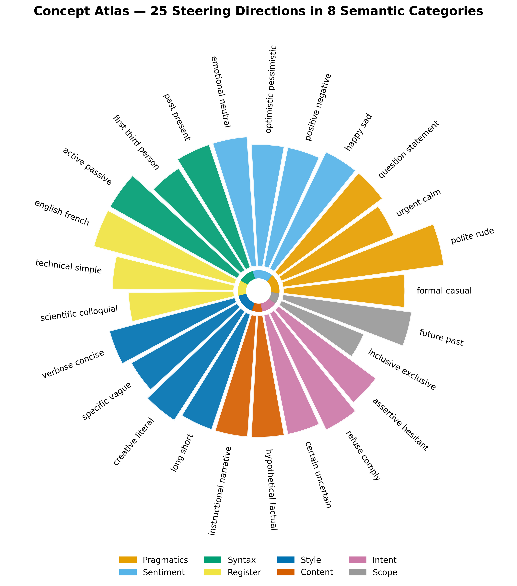
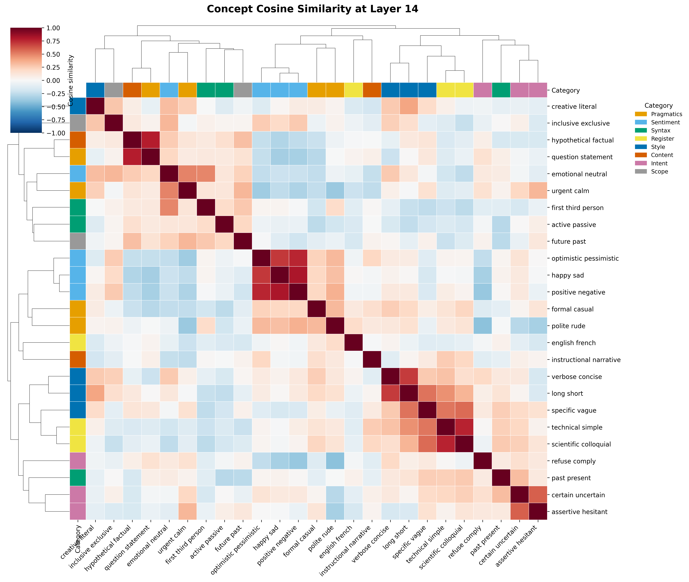
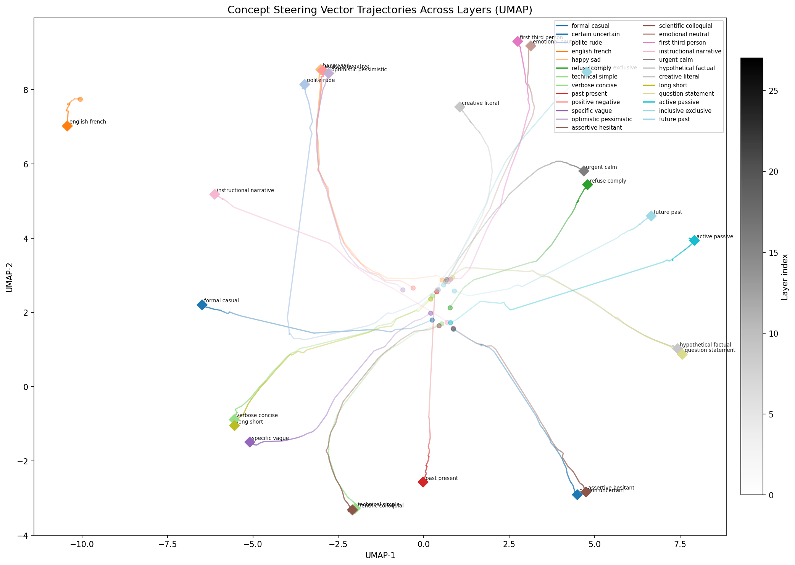
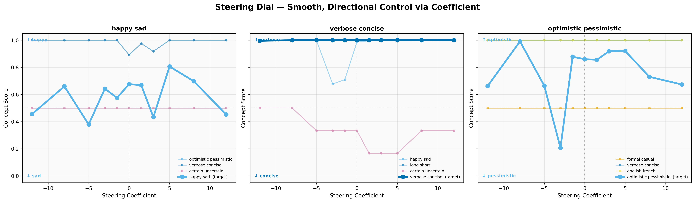
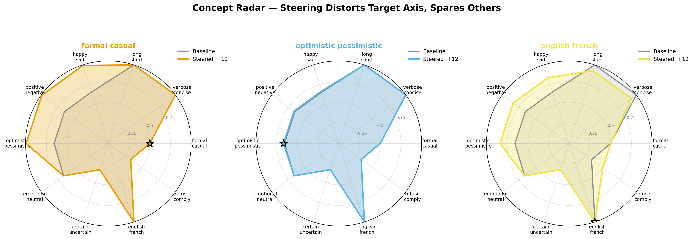
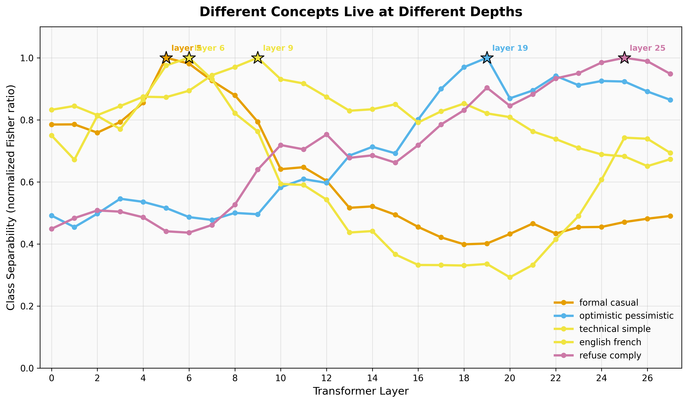
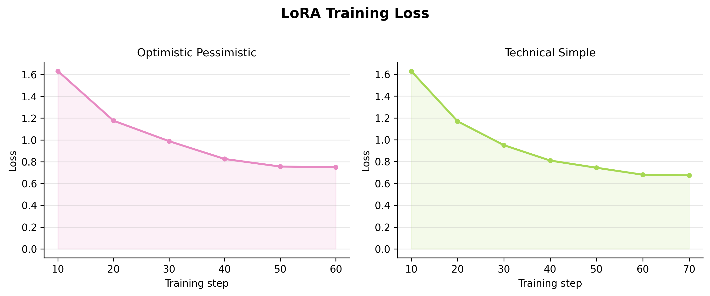
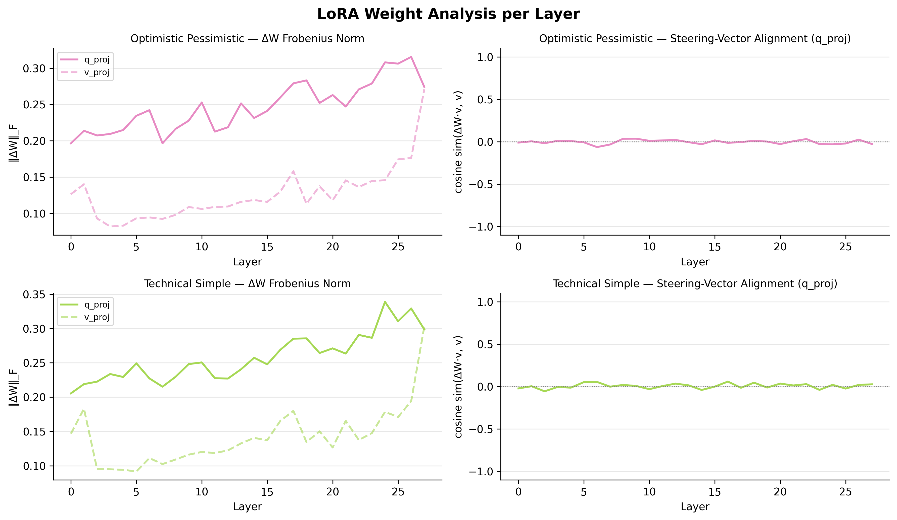

We build a mechanistic interpretability pipeline for Qwen2.5-1.5B-Instruct, computing steering vectors for 25 contrastive concept pairs across all 28 transformer layers.
Mechanistic interpretability aims to reverse-engineer LLM behavior by analyzing the geometry of internal activations. Steering vectors — residual stream directions computed as mean-differences across contrastive prompt pairs — exploit the finding (Turner et al., 2023) that high-level semantic concepts are encoded as approximately linear directions in activation space.
We investigate how 25 concept directions relate geometrically across all 28 transformer layers of Qwen2.5-1.5B-Instruct, and whether this geometry can be permanently encoded into weights via LoRA fine-tuning — moving interpretability from observation toward persistent, parameter-level behavioral control.
High-level semantic concepts can be approximately localized as linear directions in a transformer's residual stream. Steering vectors exploit this: computed by contrasting the model's internal representations of two opposing behavioral modes, then injected at inference time to shift behavior toward one pole.
Computing a steering vector for concept C:
We systematically extract and analyze steering vectors for 25 contrastive concept pairs spanning 8 semantic categories, covering a wide range of linguistic and behavioral dimensions:
Batched forward passes produce a (25, 28, 1536) direction tensor. Geometric structure is analyzed via cosine heatmaps and UMAP. Rank-16 LoRA adapters (q_proj + v_proj) are trained on steered outputs and evaluated via concept scoring and cosine alignment between weight deltas and steering vectors.

At layer 14, affective concepts (optimistic/pessimistic, happy/sad, positive/negative) form a dense cluster with similarities ≥ 0.75; syntactic concepts form a separate orthogonal group. Near-zero off-diagonal values between clusters confirm low cross-concept interference — a prerequisite for composable behavioral control.

All 25 concepts originate near a common point at layer 0, then fan out into semantically organized regions by layer 27. English/French is the most isolated concept at every layer, reflecting its fundamentally different linguistic basis. Semantically overlapping pairs (verbose/concise, long/short) maintain near-identical trajectories throughout, confirming shared geometry reflects shared meaning.

Varying α shifts the target concept score in the expected direction, but the response is noisy rather than monotonic — especially at high |α| where over-steering degrades coherence. verbose_concise shows the clearest signal; happy_sad is noisiest. Off-target scores also fluctuate rather than staying flat.

At α = +20, steering visibly shifts the targeted axis (starred) but also broadly distorts off-target axes. English/French produces the most extreme reorganization — the polygon collapses on most other dimensions while spiking toward the target. Even formal/casual and optimistic/pessimistic show substantial polygon deformation beyond the starred axis, indicating that high-coefficient injection is not surgically specific.

Concepts show distinct separability profiles across depth. Formal/casual and technical/simple peak early (layers 4–6), reflecting register-level properties near the input. Optimistic/pessimistic and english/french peak later (layers 19–25), requiring deeper integration. This motivates layer-selective injection: injecting at the wrong depth produces weaker or noisier effects.

Rank-16 LoRA adapters (q_proj + v_proj) were trained on steered outputs, with the hypothesis that fine-tuning on these examples would encode the steering direction into weights. Training loss converges smoothly, but evaluating the adapters reveals the core failure:

Despite growing weight norms, cosine alignment between LoRA deltas and steering vectors stays near zero at every layer. The adapter modifies weights — but not in the steering direction. It learned to mimic the surface form of steered outputs without capturing the underlying geometry.

Baseline: "Solving climate change is an ambitious and complex task that requires the collective effort of individuals, businesses, and governments worldwide…"
Steered: "Yes, we can work towards solving climate change through various efforts and strategies. 1. Reduce Carbon Emissions… 2. Promote Renewable Energy…"
Baseline: "It depends on your personal preferences and dietary needs. Both bananas and apples can be healthy options…"
Steered: "Both are healthy, but bananas tend to be higher in potassium and natural sugars for energy. Choose whichever you prefer based on your dietary needs!"
We thank Machine Learning @ Berkeley for making this research project possible.